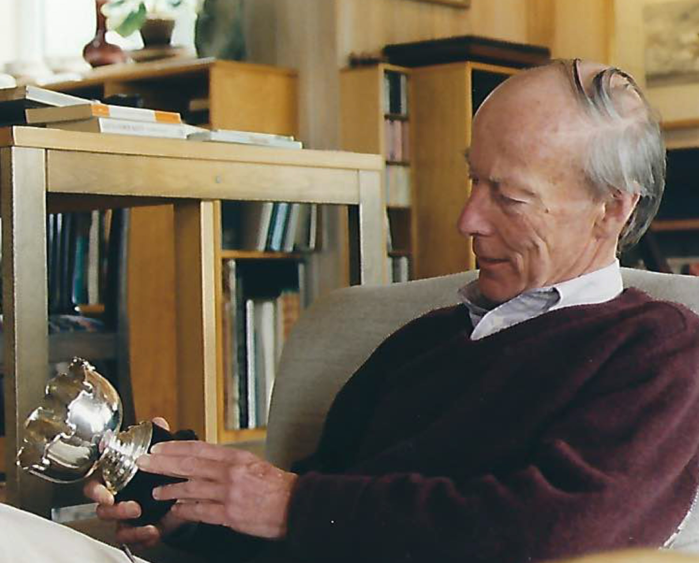

Ian Harley
Marshall
Watercolors of ships, harbors, naval history and the changing maritime world.

Ian Marshall
Ian Marshall (1933–2016) was a British marine artist whose work focused on ships, naval history and maritime settings. His architectural background informed the precision and structure of his watercolors.
Marshall was a Fellow and past President of the American Society of Marine Artists. His work was exhibited at institutions including the U.S. Navy Museum, the U.S. Naval Academy Museum, Mystic Seaport and the Royal Society of Marine Artists’ annual exhibition. His paintings are also held in maritime and naval collections in the United States and Europe.
His watercolors also illustrated Paul Kennedy’s Victory at Sea: Naval Power and the Transformation of the Global Order in World War II, published by Yale University Press in 2022.
Paintings
Paintings are identified by Ian Marshall’s inventory number. Images will be added as the family archive is digitized.
Paintings & availability
This site is managed by Ian Marshall’s daughters. For information about a painting, availability, provenance, or acquisition, please contact Jessie in the United States or Rebecca in the United Kingdom.